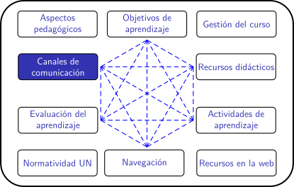

Cursos en la UN para el periodo 2020-02
Conectividad en Colombia
¿Qué es una 'buena' conectividad'?
Hay tres aspectos a tener en cuenta para evaluar la conectividad de un equipo
- Velocidad de transmisión: es la rapidez con la que viaja la información. Se mide en Mbps (Mega bits por segundo) Se deben disitinguir dos velocidades:
- La velocidad de bajada: es la rapidez con que viaja la información desde un servidor en internet hacia el computador de un internauta.
- La velocidad de subida: es la rapidez con que viaja la información desde el computador de un internauta hacia un servidor en internet.
- Volumen de datos: es la cantidad de información que viaja en un cierto tiempo. Se mide en GB (Giga bytes).
- Latencia: es el tiempo que transcurre desde que se solicita una información hasta que un servidor comienza a responder. Se mide en ms (milisegundos).
En Colombia, la contratación de servicios de internet se hace a traves de un proveedor. Es importante diferenciar dos casos: el servicio a un punto fijo (a un hogar o a una empresa, por ejemplo) y el servicio a un teléfono celular.
Los planes ofertados a los puntos fijos suelen diferenciarse por la velocidad de transmisión ("los megas") mientras que los planes a celulares suelen diferenciarse por el volumen de datos ("los gigas").
Dicho de otra forma: cuando se contrata un plan de datos para celular, no hay un compromiso expreso respecto a la velocidad de transmisión. Por eso, no es extraña la queja de usuarios de celular con planes "grandes", pero lentos.
En el caso de la velocidad de transmisión para puntos fijos, como hogares, el tipo de contrato que se hace 'supone' un uso racional de la red. Mejor dicho: cuando se contrata un plan de "X Megas", esta velocidad está supeditada a varios factores y por tanto el compromiso del operador es más de gestión que de resultado (véase por ejemplo la página de Claro sobre los factores que pueden limitar la velocidad).
Dicho en pocas palabras: ningún usuario de internet puede estar seguro de tener el 100% del tiempo unas buenas condiciones de conectividad. Además, las condiciones de conectividad en Colombia son muy heterogéneas.
Internet en Colombia
¿Cómo son las condiciones de conectividad a internet en Colombia? ¿Es un vehículo de equidad o un factor de exclusión social?
| Internet fijo | Internet por celular |
¿Dónde puedo aprender más?
- Ministerio de Tecnologías de la Información y las Comunicaciones. República De Colombia, Boletín trimestral de las TIC. Enero de 2020.
- Comisión de Regulación de Comunicaciones. República de Colombia. Redes móviles en Colombia. Análisis y hoja de ruta regulatoria para su modernización.
- Fundación Karisma. COVID-19: ¿qué está pasando con nuestros derechos en internet?
Obra publicada con Licencia Creative Commons Reconocimiento Compartir igual 4.0